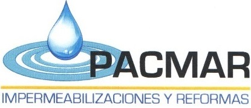

¿Quienes somos?
Pacmar es una empresa de Huesca dedicada principalmente a las impermeabilizaciones y reformas. Nuestra especializacion es el microcemento y sus posibles aplicaciones artisticas.
Afincados en Huesca capital, Pacmar tiene los materiales mas innovadores y las técnicas de aplicado necesarias, para crear de su hogar un lugar tan único como personal.
Respondemos a sus necesidades y coordinamos los gremios necesarios para que nuestro servicio sea tan rapido como invisible.